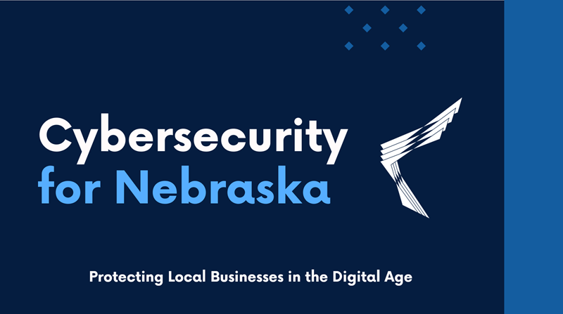

Cybersecurity Presentation
Creating a b2b presentation was a good first step. This helped us focus on our products/services, what we offered and what we wanted to ultimately educate our community on and invite them to continue the conversation. You can find that presentation here (Please note: I used a template I found online and customized that to fit our needs. I did not design this).
ID Badges
As part of our branding strategy with change management in mind, we introduced customized ID badges to ensure our team is easily identifiable on client premises, present a more professional appearance, and enable tailored access levels for employees based on their assigned clients.
Business Cards
Designed business cards as part of a way to establish new branding, change in ownership, to take on sales calls and give potential clients something tangible to remember us by.
Presentation Folders
We created presentation folders as a way for sales to keep everything in one place for client meetings, proposals, or handouts—and they make our brand stand out while giving off a professional, put-together vibe that helps with sales.